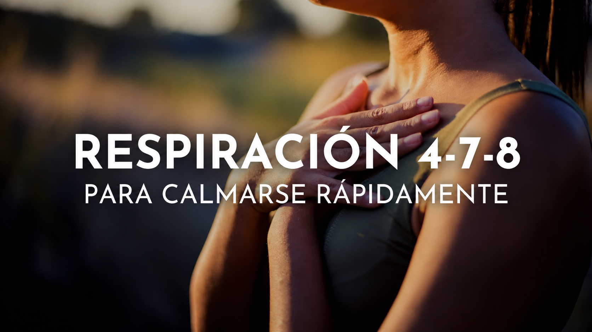

Respiración Controlada (4-7-8)
Inhala profundamente por la nariz durante 4 segundos, mantén el aire durante 7 segundos y exhala lentamente por la boca durante 8 segundos. Repite cuatro veces para reducir el ritmo cardíaco.
Práctica y Bienestar
Herramientas prácticas basadas en la respiración, el arte y la concentración para calmar la mente y recuperar el control en momentos de ansiedad.

Inhala profundamente por la nariz durante 4 segundos, mantén el aire durante 7 segundos y exhala lentamente por la boca durante 8 segundos. Repite cuatro veces para reducir el ritmo cardíaco.
Saca los pensamientos de tu cabeza pasándolos al papel sin censura. Escribir lo que te preocupa ayuda a externalizar los miedos y a ver los problemas desde una perspectiva más objetiva y manejable.
Colorear formas geométricas o trazar líneas libres desvía la atención del cerebro de los pensamientos intrusivos. La concentración en los trazos y colores actúa como una meditación activa.
Cierra los ojos e imagina un lugar seguro y sereno (un bosque tranquilo, una playa solitaria). Concéntrate en los detalles: los sonidos, los olores y la temperatura para engañar al estrés y relajar el cuerpo.
¿Necesitas más apoyo?
Los ejercicios diarios son excelentes aliados, pero recuerda que contar con ayuda psicológica marca la diferencia en el manejo de la ansiedad.